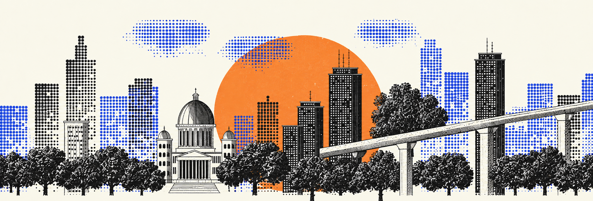

● LINE 1 · 37 STOPS · 42 KM
The whole city, one stop at a time
Short walks, old buildings and good food near every
metro station. Get off anywhere and we'll show you what's
worth seeing.
NEXT TRAIN ● EN ROUTE
Short walks, old buildings and good food near every
metro station. Get off anywhere and we'll show you what's
worth seeing.
